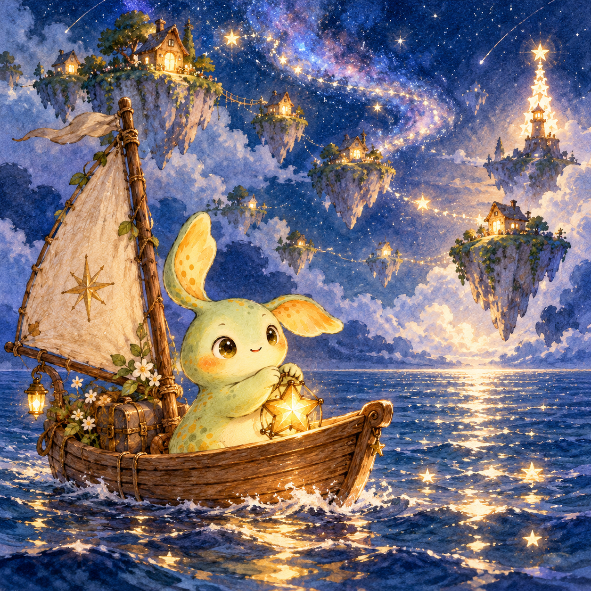

SOMEWHERE IN MY DREAMS
苔光 — Dreams
Some places stay with us after waking.

A DREAM TO KEEP
A light in every window
A small boat crosses a starlit sea. Floating islands in the sky glow through tiny windows. I do not hurry ashore; I simply lift my lantern a little higher.
After waking
Perhaps home is a light seen from far away that you know someone has left on for you.
A wish of mine
May every drifting heart find a light left on for it.